🎧 第 0 站：先聽，再玩
請先收看／收聽節目，再回來挑戰六個關卡。
🎙️ Podcast 音檔（約 21 分鐘）
想用耳朵先聽一遍？可調整播放速度，邊聽邊做題。
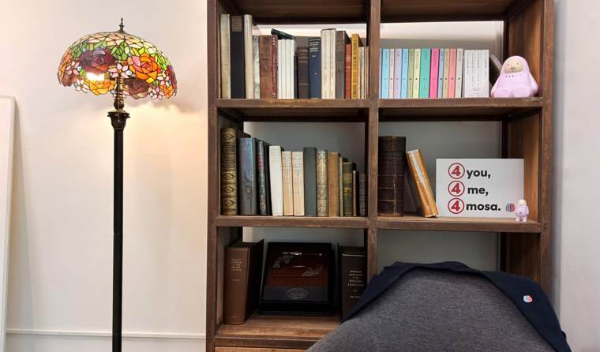
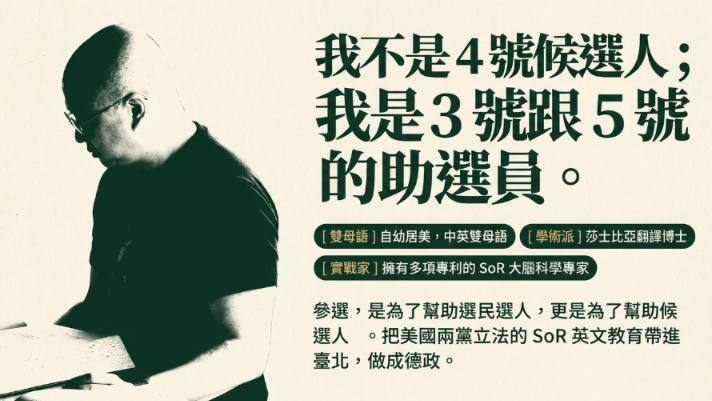
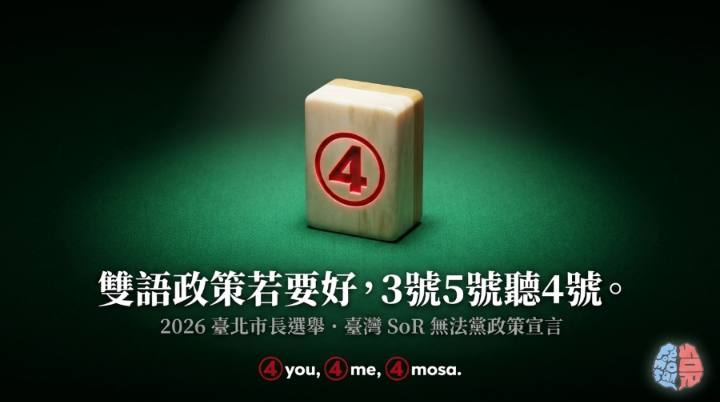
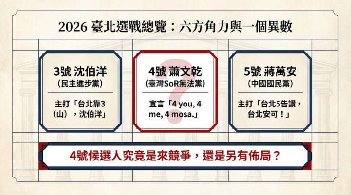
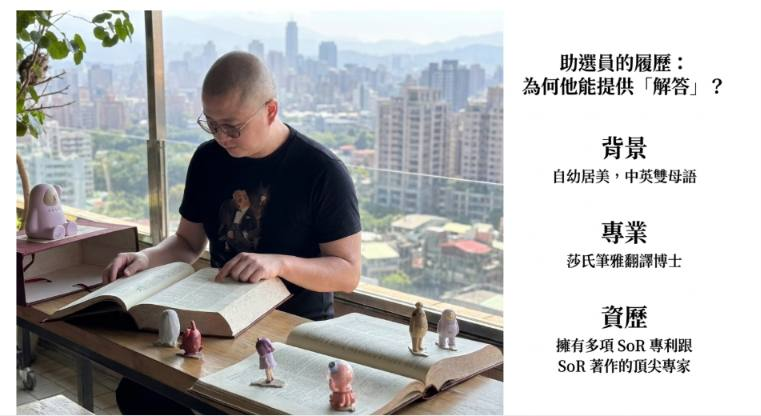
🔭 開場暖身
節目一開始，有人花大錢參選，卻說：「我不是候選人，我是 3 號跟 5 號的助選人。」他參選的唯一目的是什麼？
🀄 第 1 關：麻將隱喻與單一議題
不按牌理出牌的選戰，其實有它的邏輯。
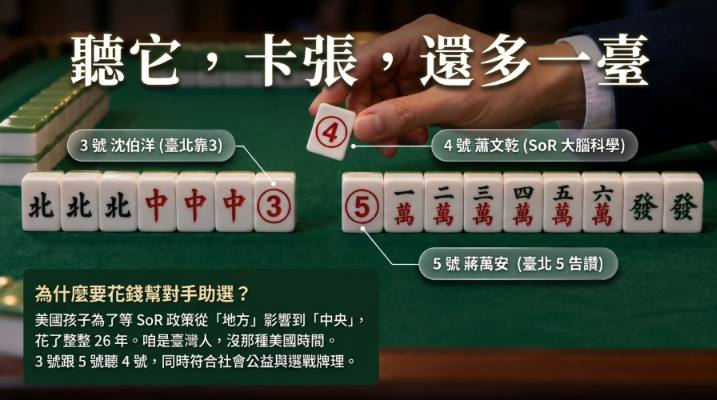
Q1 口號配對
點選左邊一項，再點右邊對應的說明。
Q2 為什麼這麼急？（填空）
美國推動 SoR 立法，從地方到中央，孩子等了整整 年；蕭博士認為台灣沒有那麼多時間可以等。
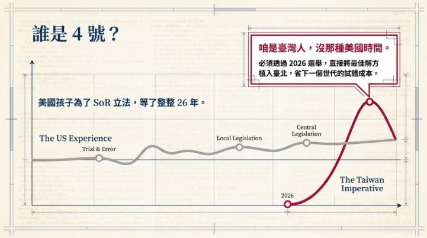
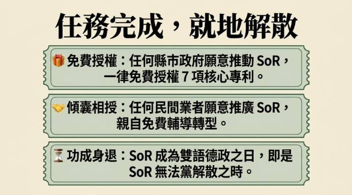
Q3 他的承諾
蕭博士在政見中表示，願意把自己的幾項專利無條件免費授權給任何願意推動的縣市？
🏊 第 2 關：雙語政策與「認知超載」
以下是蕭博士的主張；請你依節目內容判斷。
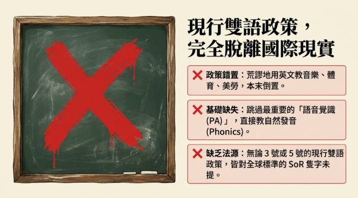
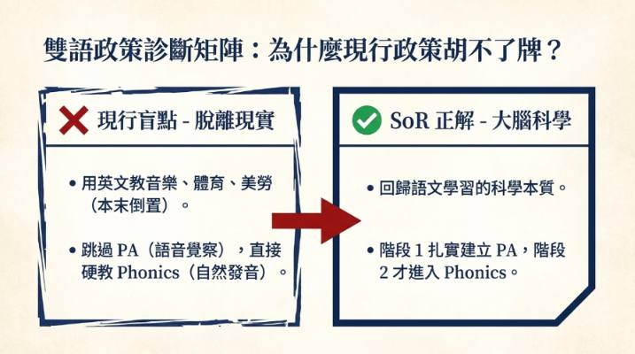
Q1 節目中的比喻
用英文教音樂、體育，但孩子還沒建立英文語音的神經迴路，就像……？
Q2 是非題
Q3 名詞解釋
「認知超載（Cognitive Overload）」最接近下列哪一種情況？
🧠 第 3 關：SoR 六階段——PA 與 Phonics
台灣最大的落差，就在最前面的兩個階段。
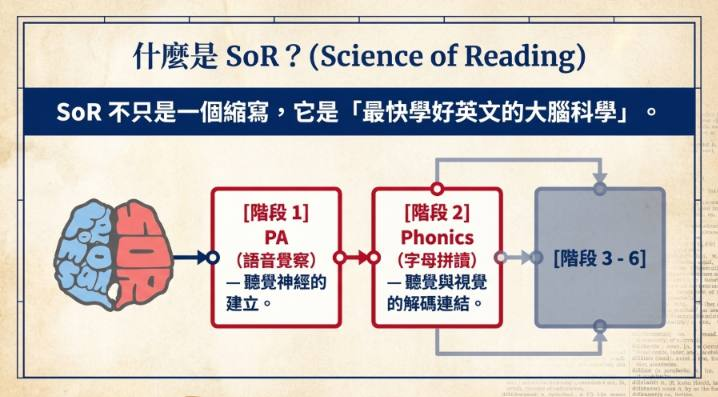
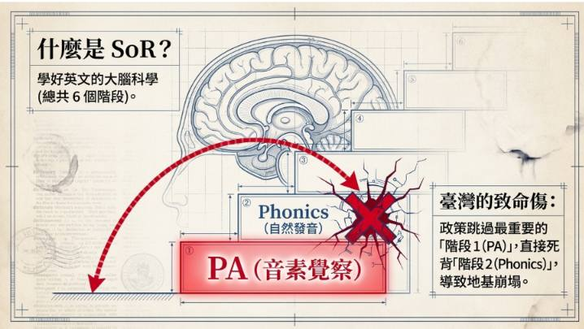
Q1 閉上眼睛玩聲音（PA 實作）
單字 cat 由三個聲音組成。按「聽」，再點掉 /k/，看看剩下什麼？
Q2 歸類：PA 還是 Phonics？
先點選一張卡片，再點下方的籃子。
🎧 第一階段 PA（語音覺察）
👀 第二階段 Phonics（自然發音）
Q3 順序題
節目說，人類大腦演化的順序是？
Q4 樂譜比喻
「沒聽過鋼琴音色，就被逼著看五線譜對應琴鍵」，比喻的是哪個狀況？
🌐 第 4 關：國際趨勢與台灣的盲點
以下數字皆出自節目內容。
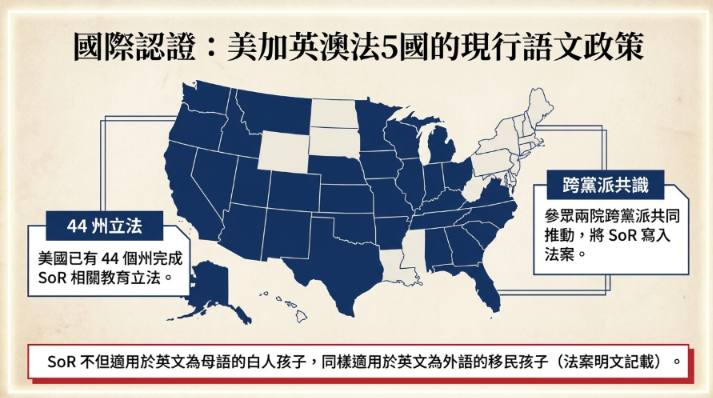
Q1 哪些是節目提到的「台灣盲點」原因？（可複選）
Q2 SoR 能用在外語學習者嗎？
節目指出美國參議院法案寫明：SoR 也適用於把英文當外語的移民孩子。主要理由是？
📚 第 5 關：字典裡的浪漫與大腦檔案櫃
PA 與 Phonics 自動化之後，大腦才有餘裕欣賞語言之美。
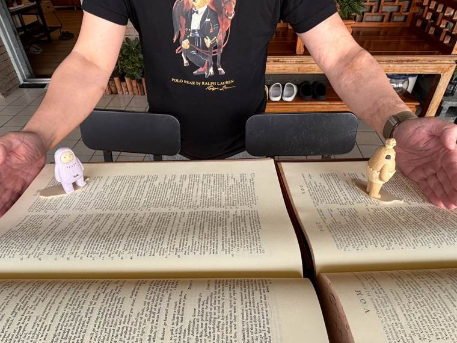
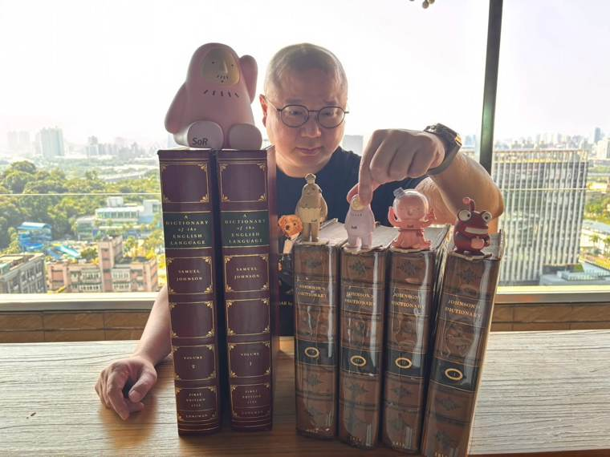
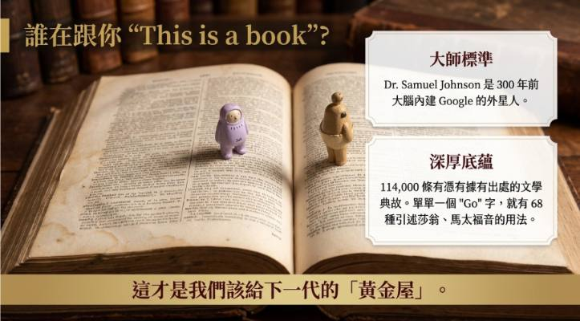
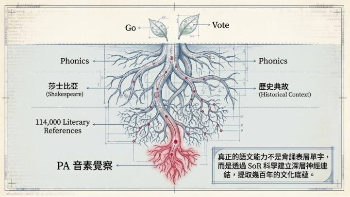
Q1 數字記憶
Johnson 字典包含 條有憑有據的文學典故；單單一個 go，就寫了 種用法。
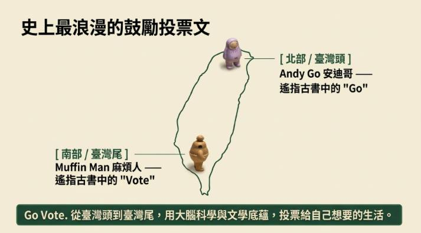
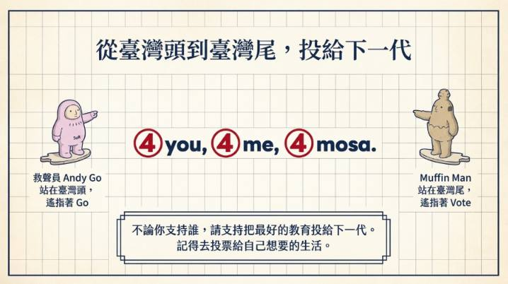
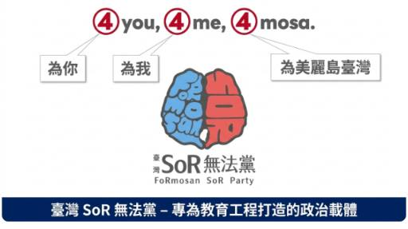
Q2 檔案櫃比喻
單字像一張張亂丟在凌亂辦公桌上的紙，找不到、記不住。
字根、字首、語音，都在極度精密的檔案櫃裡有條不紊歸類。
所以「背了又忘」的原因，節目認為是？
Q3 Johnson 引用了哪些來源？（可複選）
✍️ 我的反思
如果你過去學英文曾經很挫折，請對照節目，寫下你覺得「是哪一個階段沒打好」？你想怎麼補？（自動儲存在本機）
節目最後拋出的問題：學日文、法文時，我們是不是也跳過了聽覺適應階段、直接死記符號？你的看法：
🎤 第 6 關：SoR 政見發表
一場把 SoR 當成「禮物」送出去的政見發表。請對照演講內容作答。
📜 政見原文（點此展開／收合）
【 SoR 政見發表，SoR 新書發行，SoR 蓬勃發展 】
各位先生，各位女士，各位阿嬤阿姨姊姊妹妹小朋友。
大家平安，大家喜樂，大家好。
My fellow Taipeians,
my fellow Taiwanese citizens,
my dear fellow FoRmosans,
ladies and gentlemen,
and everyone in between,
and beyond,
in case I don't see you in the appropriate time zones,
good morning,
good afternoon,
and goodnight.
各位市民朋友，公民朋友，島民朋友，大家平安。
我不是 4 號臺北市長的「候」選人，
我是 3 號臺北市長沈伯洋的「助」選人。
我同時也是 5 號蔣萬安市長的助選人。
英文教育政策，是蔣市長跟沈市長最弱的環節，
也是我耕耘了一輩子的專業。
在這層意義上，
今天我發表的，與其說是我自己的政見，
不如說是我想送給兩位市長的政見。
不論誰當選，都歡迎拿去用，
拿去造福老百姓，拿去造福小朋友。
我別無所求；我只是在做球。
我在做球給那位最想贏球、最後贏球的市長。
我向來認為，
所謂的「市長」，
就是要跟「市」民一起成「長」。
市長這個人，就是能跟市民一起成長的人。
而一個人，到底有沒有成長？
最關鍵的指標，就是他願不願意聽真話。
而我要說的真話，就是：
臺北市的英文教育政策，
乃至全臺灣的英文教育政策，
已經跟國際社會完全脫節了。
因為整個西半球的國際社會，都正在英文教改。
從美國到英國到加拿大到澳洲，
連這些英文為母語的國家，
都在積極立法，追上大腦科學的最新研究。
特別是美國。
到今天為止，
美國已經有 44 個州議會，正式立法：
他們立法，規定學校用最科學的方法教英文；
他們立法，保障小孩用最科學的方法學英文。
一開始，
美國人英文教改的層級，只停留在地方；
後來，上升到了中央。
今年八月，美國參議院推出了 S. 4689 法案。
今年九月，美國眾議院通過了 H.R. 7890 法案。
眾議院率先通過的英文教改法案，
名稱有夠簡單粗暴。
它就叫 2026 年 SoR 法案。
The Science of Reading Act of 2026.
這也是我的政黨名稱，臺灣 SoR 無法黨，的由來。
今年市長選舉，我只是提前暖場，
把 SoR 的政見，送給市長；
後年國會選舉，我才會正式登場，
把 SoR 的政見，送給中央。
美國的 SoR 法案，有兩大重點：
第一個重點，學英文，有 6 個步驟。
第二個重點，這 6 個步驟，只要有大腦的人，全都適用。
那 6 個步驟分別是：
PA, phonics, fluency,
vocabulary and grammar,
comprehension, and writing.
總共才 6 個步驟，我們臺灣作對了 5 個步驟。
這是好消息。
壞消息是，
我們完全跳過了第 1 個步驟，也就是 PA
直接學第 2 個步驟，也就是 phonics.
這裡是電視，不是教室。
我不教大家什麼是 PA, 什麼是 phonics.
大家只要知道：學英文不能直接蓋二樓；要先蓋一樓。
而那個叫 PA 的一樓，美國政府是直接立法規定的；
但那個叫 PA 的一樓，我們臺灣政府是完全無知的。
我剛說了，SoR 法案的第一個重點，是學英文有 6 個步驟。
第二個重點是，這樣的 6 個步驟，
不但適合給英文母語的美國小孩，
也適合給英文外語的移民小孩，
也就是俗稱的 ESL 小孩。
也就是適合給臺灣小孩、日本小孩、韓國小孩，
或任何有大腦的小孩。
換句話說，
在紐約在洛杉磯在舊金山小學裡面教的 SoR,
完全可以在臺北在臺南在臺東的小學裡面教。
臺灣採用 SoR,
不需要去大改特改，我們學英文的每一步；
因為我們除了第一步，其他都學對了。
臺灣採用 SoR,
只需要我們踏對學英文的第一步。
也就是我們要記得，學英文要先學 PA.
我簡單講結論：
美國人發現，他們有太多孩子是功能性文盲了。
連母語都學不好，所以他們痛定思痛，找到了 SoR 這個答案。
他們找到了 SoR ，就開始立法。
一開始，在地方立法；
後來，直接在中央立法。
從地方立法，到中央立法，
美國孩子，等了整整 26 年。
我們是臺灣孩子，沒那種美國時間。
所以，我參選。
我參選，
不是要「當」臺北市長，
我只是要「幫」臺北市長。
我想幫臺北市長，
成為全亞洲第一個，
率先提出 SoR 英文教改的國際級政治領袖。
我參選的唯一目的，就是要親自確認，
蔣萬安市長跟沈伯洋市長，
都親耳從我的口中，聽到了 SoR 這三個字。
這不是小題大作。
跟小孩有關的議題，都不是小題。
美國特地立法保護的教育問題，也不是小題。
我們臺灣每個人都感同身受的英文問題，更不是小題。
所以我鼓勵大家，
去告訴你們支持的 3 號 跟 5 號，
那兩位篤定當選的 3 號 跟 5 號，
稍微聽一下，我這位篤定落選的 4 號。
如果未來的市長，願意採納 SoR,
來接軌國際，來造福老百姓，來造福小朋友，
那在下當然會義不容辭，
充當他們的 SoR 書僮，
充當他們的 SoR 幕僚，
充當他們的世界級的 SoR 顧問。
我是一位世界級的 SoR 顧問。
我的手上，
有 7 項 SoR 的臺灣專利，
有 2 項 SoR 的國際專利，
我會免費授權給市政府；
我的手上，
有 SoR 的字典、SoR 的教具、SoR 的教材、SoR 的 app
我也都會免費，讓市政府使用；
我的手上，甚至有我親自培訓的 SoR 師資，
多達 3600 多人，
我也會懇求他們，馬上免費投入，第一線的 SoR 教學，
臺灣的英文教育，失、火、了。
我不囤水，我不賣水，我只送水。
然後烙人，一起救火。
既然要烙人，就烙大咖的。
我烙來救火的打火兄弟，
一個是萬事都安，
一個還自帶洋流。
所以這場火，是一定會滅的。
我今天就講兩件事。
第一件事：SoR 是什麼？
第二件事：SoR 無法黨要做什麼？
SoR 是什麼？3 句話。
第一句話：SoR 是最快學好英文的大腦科學。
第二句話：SoR 是美國直接立法的英文政策。
第三句話：SoR 能讓臺北市的雙語，遙遙領先全亞洲。
SoR 無法黨要做什麼？也是 3 句話。
第一句話：SoR 無法黨要先把 SoR 帶進地方政府。
第二句話：SoR 無法黨要再把 SoR 帶進中央政府。
第三句話：SoR 無法黨會在任務完成後，就地解散。
很多人不理解我，覺得我的行為很荒謬。
我想說的是，比我荒謬的事，多得是。
例如，
我們臺灣已經花光了 125 億的雙語預算；
我們臺灣還有超過 1000 間國小自稱是雙語國小。
但臺灣同時，
有太多小學生放棄英文，
有更多國中生放棄英文，
有超多高中生放棄英文。
我覺得這很荒謬。
數字會說話。
臺灣每年有超過 10000 個高三考生，
學了將近 10 年的英文義務教育，
然後英文作文是零分。
我覺得這也很荒謬。
此時此刻，全美國的小學老師，都在受訓學 SoR；
此時此刻，全臺灣的外師，恐怕連聽都沒聽過 SoR。
此時此刻，臺灣有 120 萬名小學生，在學自然發音法。
但他們都不知道，他們正在跟自己的大腦打架。
他們都不知道，他們的英文都跳過了一樓，直接蓋二樓。
這 120 萬名孩子都不知道，從腦科學的角度，
他們完全違背了最基本的邏輯，
在亂學英文，在苦學英文，
在用一種最不可能學會英文的方式，學英文。
我相信大家都會覺得，這很荒謬。
我小學 135 年級都在臺北吉林國小，
246年級分別在德州奧斯丁、加州洛杉磯，跟科羅拉多的可凝視堡。
我國中在臺灣，考上建中後，休學去美國念高中。
我大學一半在美國念電機系，一半在臺大念外文系
我在臺灣師大唸翻譯碩士，在北京清華念翻譯博士，
我碩博士研究的，都是莎氏筆雅。
我要說的是，我不是中英文的門外漢。
曾經有四年的時間，
我一邊在師大英語系教書，教未來的英文老師，
我一邊在偏鄉小學教書，教早就放棄英文的孩子。
我同時看到了玉山的高峰，也同時看到了死亡的蔭谷；
我同時看到了因果的因，也同時看到了因果的果；
我看不到的，是臺灣荒謬的英文教育，
什麼時候，才會停止荒謬。
我有兩個母語，但只有一個願：
我從 19 歲開始，就發了一個願。
我就是覺得，一定有某種方法，
能讓臺灣的孩子，
不用像我這樣顛沛流離，
就能把中英文都學得像母語一樣好。
於是我不斷思考，不斷研發，不斷推廣，
不斷被社會恥笑，說我的行為很荒謬，我的方法很荒謬。
我今年 52 歲了。
在過去的 33 年裡，我跟西半球同樣有心改善英文教育的人，
做著同樣的夢想，
付出同樣的努力，
最後得到同樣的結論：
只是我一直到兩年前，才知道原來我所建構的雙母語系統，
老早就有個名稱了：
它叫做 SoR.
我也這才知道，原來我推廣了 33 年的發明專利，
就是用改良的44個注音，去學美語的44個發音，
原來這樣的教學邏輯，也老早就有個名稱了：
它叫做 PA.
說來不可思議，
在過去的 33 年，
在西半球，有某一群有心人，
在東半球，有某一個有心人，
他們彼此完全不認識，
各自在各自的崗位，
各自做各自的研究，
但卻得到了，完全一樣的結論。
SoR 是我一輩子的善意，也是冥冥中的天意；
PA 更是我一輩子的善意，更是冥冥中的天意。
既然談到天意，最後我想談談天命。
SoR 真正的天命，
是要讓福爾摩莎，
發動一場，改變全人類的語文復興。
福爾摩莎的 SoR
一定會超越臺北，一定會超越臺灣，超越亞洲，
去啟蒙全人類，重新思考：
到底什麼是母語？
到底什麼是外語？
到底什麼是雙語？
而這樣的雙語啟蒙，
跟這樣的雙語復興，
就不再是 小寫的 word,
而是大寫的 Word.
這樣的大寫的 Word,
對基督徒來說，就是道成肉身的道；
對佛教徒來說，就是行菩薩道的道，
對我來說，
就是這種好消息不能只有我知道的道，
就是我好開心啊，現在大家終於也聽到了的...
道。
謝謝大家
#英文自學王_鄭錫懋_Michael_的SoR自學王
Q1 暖身聽力：英文開場
演講一開場，先用英文向「my fellow Taipeians / Taiwanese citizens / FoRmosans」問候，最後一句是：
這句幽默的重點是什麼？
Q2 美國的立法時間線
演講提到：今年八月，美國參議院推出 S. 4689 法案；今年九月，美國眾議院通過 H.R. 7890 法案。眾議院率先通過的法案，名稱簡單粗暴，叫什麼？
這也是演講者政黨名稱「臺灣 SoR 無法黨」的由來。
Q3 學英文的 6 個步驟（排序）
依序點選，排出美國 SoR 法案的 6 個步驟。
Q4 一樓與二樓
演講者說：「學英文不能直接蓋二樓，要先蓋一樓。」依他的說法，臺灣在 6 個步驟中……？
Q5 數字會說話（配對）
點選左邊的數字，再點右邊對應的說明。
Q6 SoR 的三句話
演講用 3 句話說明「SoR 是什麼」。下列哪一項不是其中之一？
Q7 無法黨要做什麼？（可複選）
Q8 一輩子的線索：PA
演講者說他推廣 33 年的發明專利，是用改良的 44 個注音去學美語的 44 個發音。他兩年前才知道，這樣的教學邏輯早有名稱，叫做？
✍️ 我的反思
演講中，哪一個數字、比喻或句子讓你印象最深？你會怎麼把它講給家人或學生聽？